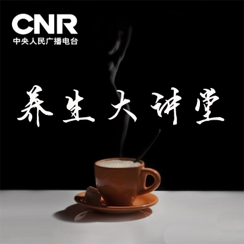

--:--
--:--



养生大讲堂
 播主：吴凯 庄丽
播主：吴凯 庄丽- 2016-01-25高血压常用药物基本知识
- 2016-01-21怎么用好风池穴
- 2016-01-21缓解肝火旺的方法
- 2016-01-19救命的人中穴
- 2016-01-19如何调脾呢？
- 2016-01-19自我保健“人迎穴”
- 2016-01-18高血压用药的认识误区
- 2016-01-15高血压需要自我健康管理
- 2016-01-14治打嗝的方法
- 2016-01-14如何用好地仓穴
- 2016-01-14冬季养生的基本规律
- 2016-01-14非药物治疗是高血压治疗的基础
- 2016-01-12肚子疼缓解新方法
- 2016-01-12脾脏的调理
- 2016-01-12治疗眼病的承泣穴和四白穴
- 2016-01-12百岁老人的长寿之道
- 2016-01-12百岁老人的长寿之道
- 2016-01-08高血压的测量和监测
- 2016-01-08健康日历
- 2016-01-04治疗一切眼病的睛明穴
- 2015-12-25高血压患者应提防出现低血压
- 2015-12-22人的穴位是如何分布的？
- 2015-12-18造成高血压的危险因素与易患人群
- 2015-12-17高血压的健康危害
- 2015-12-16抽动秽语综合征的饮食宜忌
- 2015-12-15孤独症的饮食宜忌
- 2015-12-11做糖尿病的主人
- 2015-12-10与健康密切相关的气象指数
- 2015-12-09儿童多动症的饮食宜忌
- 2015-12-07老年痴呆的饮食宜忌
- 2015-12-03糖尿病的运动治疗经
- 2015-12-02躁狂症的饮食宜忌
- 2015-11-30焦虑症的饮食宜忌
- 2015-11-26抑郁症的饮食宜忌
- 2015-11-23精神分裂症的饮食宜忌
- 2015-11-19你不知道的冬季抑郁症
- 2015-11-18吃什么能提高大脑记忆力
- 2015-11-17吃什么能减缓大脑的衰老
- 2015-11-13吃什么能缓解大脑疲劳
- 2015-11-10吃什么能减轻大脑的压力
- 2015-11-06糖尿病的自我健康管理实录
- 2015-11-05如何做糖尿病的主人
- 2015-11-04吃什么能减轻大脑的压力
- 2015-11-02吃什么能使大脑更活跃
- 2015-10-30做糖尿病的主人
- 2015-10-30把握关键环节减少并发症的危害
- 2015-10-22糖尿病患者的心理因素调整与医患关系
- 2015-10-21快乐大脑的奥秘
- 2015-10-19酸性食物与碱性食物和健康大脑的关系
- 2015-10-16糖尿病自我健康管理的治疗环节
- 2015-10-15糖尿病自我健康管理的诊断环节
- 2015-10-14健康大脑需要什么样的睡眠？
- 2015-10-12大脑如何增强抗氧化能力
- 2015-10-10如何科学有效的选择脑保健品？
- 2015-10-09糖尿病的合理运动
- 2015-10-08糖尿病的饮食管理
- 2015-10-08寒露：真正的秋天开始了
- 2015-10-08水在大脑中的重要作用
- 2015-09-24糖尿病并发感染
- 2015-09-17糖尿病肾病眼病并发症
- 2015-09-14健脑怎么吃之大脑运转的主动力
- 2015-09-11糖尿病心脑血管并发症
- 2015-09-09健脑怎么吃之蛋白质的作用
- 2015-09-07糖尿病并发症的监测和糖尿病足病
- 2015-08-31糖尿病的苏木杰现象和黎明现象
- 2015-08-28糖尿病的综合检测
- 2015-08-21糖尿病患者的血糖监测
- 2015-08-21糖尿病口服药物和胰岛素的基本常识
- 2015-08-14糖尿病患者应为自己的合理用药做什么
- 2015-08-13糖尿病胰岛素的使用
- 2015-08-07糖尿病的合理用药（下）
- 2015-08-07糖尿病的合理用药（上）
- 2015-07-31糖尿病的治疗捷径
- 2015-07-30糖尿病的治疗方法
- 2015-07-24糖尿病的治疗目标
- 2015-07-23低血糖、血糖波动和持续高血糖的危害
- 2015-07-10李开复的向死而生：我为死亡修了7个学分
- 2015-07-10糖尿病高危人群与早期症状
- 2015-07-09糖尿病前期与生活方式调整
- 2015-07-09既熟悉又陌生的糖尿病
- 2015-07-03糖尿病的健康危险因素
- 2015-06-26高血压的自我健康管理十部曲
- 2015-06-25防治高血压的辅助工具
- 2015-06-18难治性高血压患者的个案分析
- 2015-06-11老年高血压患者的个案分析
- 2015-06-05高血压并发心脏病案例分析
- 2015-06-04吸烟其实是种病
- 2015-05-29高血压患者应警惕的事
- 2015-05-28高血压的心脏并发症
- 2015-05-22说说高血压的并发症
- 2015-05-21难治性高血压患者的用药
- 2015-05-15老年高血压的用药注意事项
- 2015-05-14高血压坚持用药很重要
- 2015-05-07高血压的用药常识
- 2015-04-30高血压用药的认识误区
- 2015-04-24高血压的健康管理重点
- 2015-04-16高血压的测量与检测
- 2015-04-10高血压患者应注意的那些事
- 2015-04-09高血压的诊断标准和分级
- 2015-04-03关注引发高血压的危险因素
- 2015-04-02您了解高血压吗？
- 2015-03-27情绪疾病要如何用药
- 2015-03-24失眠了该怎么办
- 2015-03-20不满情绪引发的系列问题
- 2015-03-19表达情绪的黄金法则
- 2015-03-18中医穴位养生法之正确的找穴位
- 2015-03-17养护肠胃的圣品粥
- 2015-03-16中医穴位养生法之穴位的分布
- 2015-03-13情绪究竟应该如何表达
- 2015-03-12对于情绪接受是改变的前提
- 2015-03-11智慧应对变化避免健康事故
- 2015-03-10粥食养生之下品篇
- 2015-03-05情绪焦虑怎么办
- 2015-03-03天下第一补——粥
- 2015-02-28怎样的修身养性才能长寿
- 2015-02-26如何更好地表达情绪
- 2015-02-16运动和运动养生不能相提并论
- 2015-02-11生命在于运动选择方式很重要
- 2015-02-04中医里的枕头与健康
- 2015-02-02影响生活质量的床
- 2015-01-30关注青年人的情绪问题
- 2015-01-28影响睡眠的不起眼因素
- 2015-01-26老年抑郁的新59岁现象
- 2015-01-21对自己的身体做个有心人
- 2015-01-19药源性伤害你知道多少
- 2015-01-16如何走出中年危机
- 2015-01-13吸烟的危害
- 2015-01-13如何让饮酒发挥养生作用
- 2015-01-07中医里的饮茶饮酒之道
- 2015-01-06养脾养胃饮食很重要
- 2015-01-05生活中离不开的“米”
- 2014-12-31最营养的饮食烹调方式
- 2014-12-30饮食当中的健康原则
- 2014-12-26说说焦虑的强迫状态
- 2014-12-25饮食细节中的养生方略
- 2014-12-18你不知道的穿鞋讲究
- 2014-12-12靠吃减压只会越忙越胖
- 2014-12-11不生气就不生病
- 2014-12-09毛巾的正确使用方法
- 2014-12-08脊柱：有26名士兵的战斗连队
- 2014-12-04冬季进补应适度
- 2014-12-01盘点适合冬季食用的蔬菜
- 2014-11-28头疼也许是定时炸弹
- 2014-11-24泡脚的秘密你知道吗？
- 2014-11-22解析情绪传递正能量
- 2014-11-18秋冬交替秋冻应适可而止
- 2014-11-14家常菜：最营养的健康饮食
- 2014-11-03秋季皮肤燥痒怎么办？
- 2014-10-28糖尿病患者的饮食规则2
- 2014-10-28糖尿病患者的饮食规则3
- 2014-10-25停一停想一想做情绪的主人
- 2014-10-22老年慢性病正确用药很重要
- 2014-10-19孕妇产前抑郁应该怎么办？
- 2014-10-14如何避免药物成瘾
- 2014-09-30儿童多动症的饮食宜忌
- 2014-09-18刻不容缓的脑疲劳
- 2014-09-12天天洗头真的能去头屑吗？
- 2014-08-20每个月总有那么几天不开心
- 2014-08-06搞怪，根本停不下来！
- 2014-08-01你的大脑睡好了吗？
- 2014-07-21脑中的抗氧化大战
- 2014-07-16你脑子进氧了吗？
- 2014-07-15糖尿病患者如何自我监测
- 2014-06-23时间因素对糖尿病的用药影响
- 2014-06-19糖尿病的合理用药
- 2014-06-09大脑健康的重要性
- 2014-06-04糖尿病的自我健康管理
- 2014-06-04健脑的知识和方法
- 2014-05-30糖尿病的自我健康管理5
- 2014-05-23糖尿病患者的饮食规则4
- 2014-05-20老年人记忆力减退的诊断和治疗
- 2014-05-20老年人听力减退的诊断和治疗
- 2014-05-20高血脂患者的饮食原则 2
- 2014-05-20高血脂患者的饮食原则 1
- 2014-05-20老年人视力减退的诊断和治疗
- 2014-05-20女性不孕症的诊断和治疗
- 2014-05-20高血压患者的饮食原则 1
- 2014-05-20女性更年期的诊断和治疗
- 2014-05-20女性肾虚的诊断和治疗
- 2014-05-20肾阳虚的治疗和养生
- 2014-05-20痛风患者的饮食原则2
- 2014-05-20小儿肾虚的诊断和治疗
- 2014-05-20老年性膝关节骨闭的诊断和治疗
- 2014-05-20老年腰痛的诊断和治疗
- 2014-05-20老年肩痛的诊断和治疗2
- 2014-05-20老年肩痛的诊断和治疗
- 2014-05-20痛风患者的饮食原则
- 2014-05-20老年骨质疏松的诊断和治疗
- 2014-05-20老年痴呆的诊断和治疗
- 2014-05-20冠心病患者的饮食原则2
- 2014-05-20冠心病患者的饮食原则


中国国际广播电台丨北京人民广播电台丨保定人民广播电台丨广东人民广播电台丨广西人民广播电台丨成都广播电视台
河北人民广播电台丨河南人民广播电台丨佛山人民广播电台丨郑州人民广播电台丨玉林人民广播电台丨鄂尔多斯广播电视台
浙江广播电视集团丨南京广播电视集团丨厦门广播电视集团丨开封人民广播电台丨南阳人民广播电台丨吉林广播网
贵州广播电视台丨杭州广播电视台丨合肥广播电视台丨湖南广播电视台丨济宁广播电视台丨攀枝花人民广播电台
江西广播电视台丨西安广播电视台丨广州广播电视台丨甘肃广播电视台丨烟台广播电视台丨乌鲁木齐人民广播电台
温岭广播电视台丨南通广播电视台丨江阴广播电视台丨郴州广播电视台丨延边广播电视台丨赤峰广播电视网
天津人民广播电台丨重庆人民广播电台丨苏州人民广播电台丨扬州人民广播电台丨四川人民广播电台
河北人民广播电台丨河南人民广播电台丨佛山人民广播电台丨郑州人民广播电台丨玉林人民广播电台丨鄂尔多斯广播电视台
浙江广播电视集团丨南京广播电视集团丨厦门广播电视集团丨开封人民广播电台丨南阳人民广播电台丨吉林广播网
贵州广播电视台丨杭州广播电视台丨合肥广播电视台丨湖南广播电视台丨济宁广播电视台丨攀枝花人民广播电台
江西广播电视台丨西安广播电视台丨广州广播电视台丨甘肃广播电视台丨烟台广播电视台丨乌鲁木齐人民广播电台
温岭广播电视台丨南通广播电视台丨江阴广播电视台丨郴州广播电视台丨延边广播电视台丨赤峰广播电视网
天津人民广播电台丨重庆人民广播电台丨苏州人民广播电台丨扬州人民广播电台丨四川人民广播电台
中央人民广播电台 版权所有(C)
网上传播视听节目许可证号 0102002 | 京ICP备15053917号-1
通讯地址：北京市丰台区总部基地18区7号楼 | 邮编：100070
联系电话：010-56807286 | 邮箱：lianmeng@cnr.cn